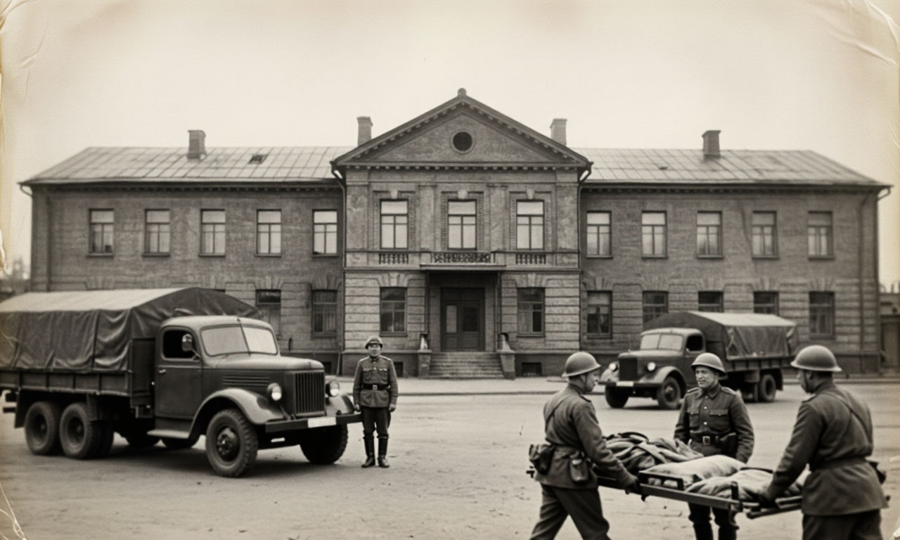
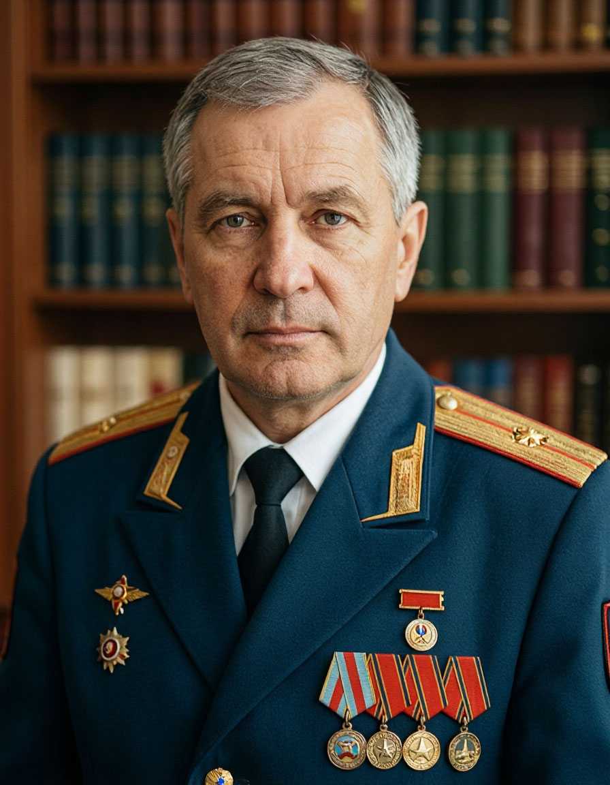
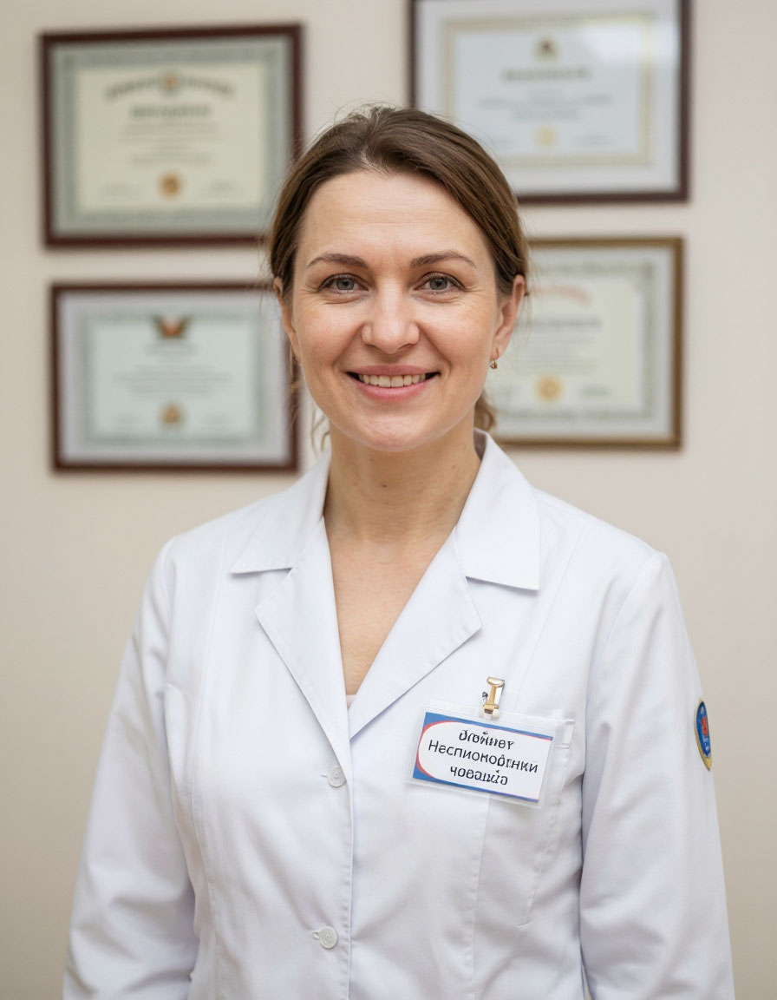
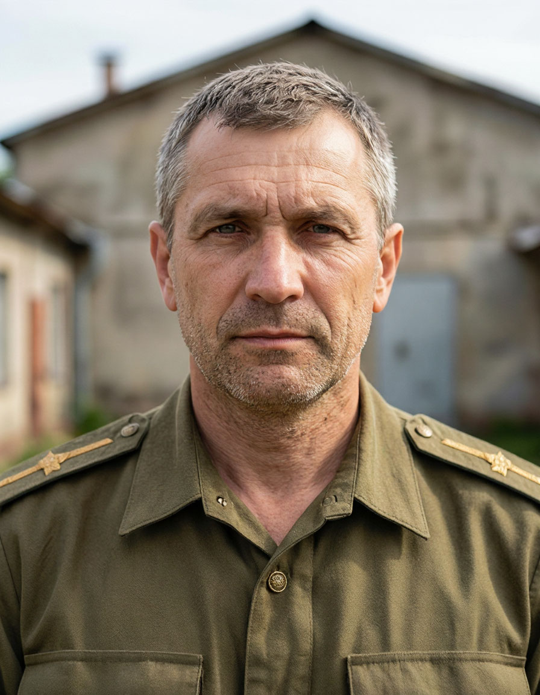

О госпитале
Филиал №7 Федерального государственного казённого учреждения «Главный военный клинический госпиталь имени академика Н.Н. Бурденко» Министерства обороны Российской Федерации
История и традиции

Филиал №7 ведёт свою историю с 1941 года, когда на базе эвакуационного госпиталя было развёрнуто специализированное хирургическое отделение для лечения раненых, поступающих с фронтов Великой Отечественной войны. За годы войны через госпиталь прошло более 25 000 военнослужащих, более 80% из которых были возвращены в строй.
В послевоенные годы учреждение развивалось как многопрофильный лечебный центр. В 1968 году введён в эксплуатацию новый хирургический корпус, оснащённый передовым на тот период медицинским оборудованием. В 1985 году открыто отделение реабилитации для воинов-интернационалистов, выполнявших служебный долг в Афганистане.
С 2000-х годов госпиталь является ведущим учреждением по лечению минно-взрывных и огнестрельных ранений, протезированию и реабилитации военнослужащих. На базе филиала работают кафедры военно-полевой хирургии, травматологии и ортопедии, нейрохирургии ведущих медицинских вузов страны.
Сегодня Филиал №7 — это современное многопрофильное лечебное учреждение на 450 коек, оказывающее специализированную, в том числе высокотехнологичную, медицинскую помощь военнослужащим, ветеранам, членам их семей и гражданскому персоналу Министерства обороны.
Руководство

Иванов Сергей Петрович
Начальник филиала
Полковник медицинской службы
Доктор медицинских наук, профессор
Специальность: организация здравоохранения и общественное здоровье
Телефон приёмной: +7 (495) 765-00-01
Часы приёма по личным вопросам: четверг с 15:00 до 18:00

Петрова Елена Викторовна
Заместитель начальника филиала по медицинской части
Подполковник медицинской службы
Кандидат медицинских наук
Специальность: хирургия
Телефон приёмной: +7 (495) 765-00-02
Часы приёма по личным вопросам: вторник с 14:00 до 17:00

Сидоров Андрей Николаевич
Заместитель начальника филиала по административно-хозяйственной работе
Майор
Телефон приёмной: +7 (495) 765-00-03
Часы приёма по личным вопросам: среда с 10:00 до 13:00
Структура и органы управления
Клинические подразделения
- Приёмное отделение
- Хирургическое отделение (включая гнойную хирургию)
- Травматолого-ортопедическое отделение
- Нейрохирургическое отделение
- Отделение челюстно-лицевой хирургии
- Терапевтическое отделение
- Кардиологическое отделение
- Отделение анестезиологии и реанимации
- Отделение медицинской реабилитации и физиотерапии
Противодействие коррупции
В соответствии с Федеральным законом от 25.12.2008 № 273-ФЗ «О противодействии коррупции» и ведомственными приказами Министерства обороны Российской Федерации в филиале организована работа по профилактике коррупционных правонарушений.
Сведения о доходах, расходах, об имуществе и обязательствах имущественного характера руководителей учреждения и членов их семей размещены на официальном сайте Министерства обороны Российской Федерации в разделе «Противодействие коррупции».
Контакты для сообщений о фактах коррупции
- Телефон доверия: +7 (495) 765-00-99
- Электронная почта: anticorruption@gvkg-burdenko.mil.ru
- Почтовый адрес: 105229, г. Москва, Госпитальная пл., д. 3, кабинет 112 (для письменных обращений)
Все сообщения рассматриваются в установленном порядке. Анонимные обращения принимаются и проверяются. Конфиденциальность гарантируется.